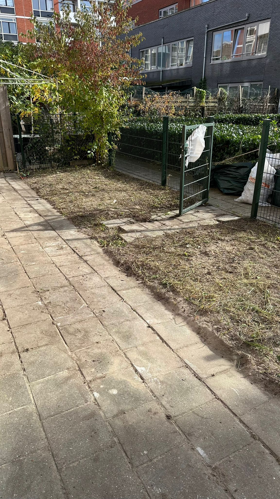
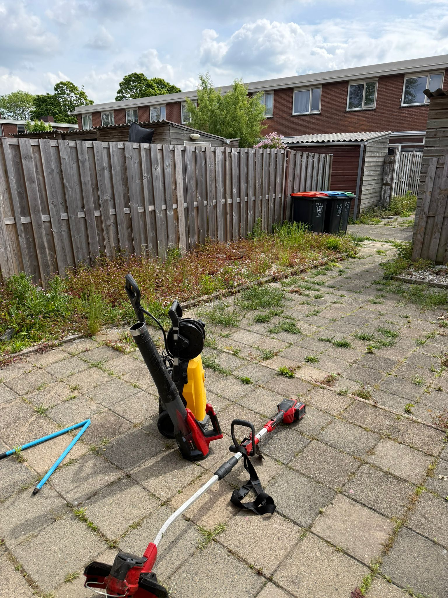
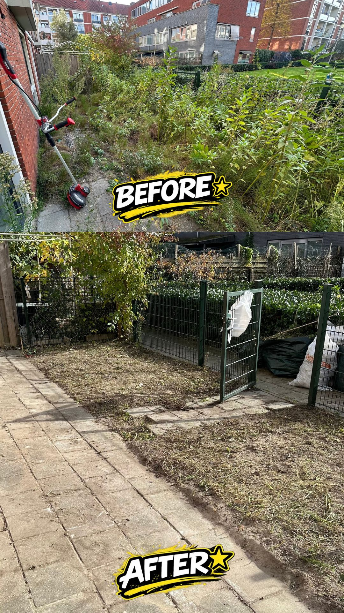

Bestrating
Hoogwaardig straatwerk voor opritten, terrassen en paden. Wij leggen elk type bestrating vakkundig aan — van klassieke klinkers tot moderne keramische tegels.
- Sierbestrating & klinkers
- Keramische tegels
- Opritten & Inritten
- Kiezels & Grind

Tuinaanleg
Complete transformatie van uw tuin. Van ontwerp tot de laatste plant in de grond — wij zorgen voor een tuin die bij u past.
- Beplanting & Gazon
- Kunstgras
- Schuttingen & Hekken
- Overkappingen & Pergola's

Periodiek Onderhoud
Houd uw tuin het hele jaar in topconditie met onze periodieke onderhoudsservice. Wij komen regelmatig langs zodat uw tuin er altijd perfect uitziet.
- Maandelijks of seizoensgebonden
- Grasmaaien & bijhouden
- Borders opschonen

Snoeien & Heggen
Professioneel snoeien van heggen, struiken en bomen. Wij zorgen voor de juiste vorm en stimuleren gezonde groei.
- Taxus, Buxus, Conifeer
- Sierbomen & fruitbomen
- Gratis afvoer

Onkruidbestrijding
Effectieve verwijdering van onkruid uit tuinen, opritten en terrasvoegen. Snel resultaat zonder schade aan uw bestrating.
- Handmatig & mechanisch
- Voegen reinigen
- Preventieve behandeling

Tuin Opruimen
Verwaarloosde of rommelige tuin? Wij ruimen alles netjes op, van bladeren en takken tot complete tuinrenovaties.
- Compleet opruimen
- Gratis afvoeren
- Tuin sloopwerk